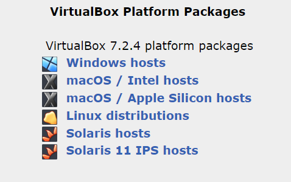

What is it?
Kali is an operating system that was made specially for cybersecurity work (and hacking as well). It has a large toolkit of useful programs that we're going to learn about, including Hydra, Nmap, Wireshark, Tcpdump, MacChanger, Chisel, Aircrack-ng, etc.
Some Vocab:
As much as we know vocabulary might not be that interesting, it's important to know for the future, since there's a LOT of acronyms and words in cybersecurity that you're going to be hearing and using, so it's best to get used to it.
- Operating System (OS): The main software that runs your computer, like Windows, macOS, iOS, GNU/Linux, etc.
- Virtual Machine (VM): It's basically a computer inside another computer. You can run your regular OS, like Windows, and still have Kali Linux inside of it
- ISO File (International Organization for Standardization File): Sounds fancy, but really it's just a full copy of an OS within one tiny file
- Hypervisor: Software that creates and manages VMs. Examples are VirtualBox and VMWare Workstation. There's also QEMU, but mostly Linux users use that, and you're likely running on Windows or mac
- Bootable USB: Just a USB drive (which you hopefully already know about) that can start up a computer and install an OS (we don't need this yet)
- Partitioning: A more advanced topic, but it's dividing up your drive into sections called partitions, which are like walls for a room. We don't need this yet, but it is good to know
Now, let's get into the nitty-gritty:
Method 1: Easy way :)
Minimum Requirements*:
8 GBof RAM20-30 GBof free hard drive space- A decently fast CPU (you probably have this)
*But, how do I know if I meet them? Well, you can press Ctrl+Shift+Esc on Windows and click on "Performance" inside of Task Manager, and it'll give you a spec (specifications) sheet. On mac, you can click on "About" in the top menu bar of your computer. On Linux, you can type uname -a, or use a custom program like fastfetch
BIG DISCLAIMER FOR WINDOWS USERS:
- You NEED to DISABLE something called Hyper-V. If you don't know what that is, for Windows users, Hyper-V will conflict with Virtualbox, making it run poorly and crash often
- To check if you hve Hyper-V, press
Win+R, and typeoptionalfeatures, then pressEnter - Look for a "Hyper-V" in the list of shown items. If it's checked, then it's enabled. Uncheck it.
- Alternative method: go to cmd (Command Prompt), and right click and "Run as Administrator". Then use the following command:
bcdedit /set hypervisorlaunchtype off
- Alternative method: go to cmd (Command Prompt), and right click and "Run as Administrator". Then use the following command:
- Finally, restart your computer
BIG DISCLAIMER FOR MACOS USERS:
- You need to check if you're using an Intel-based Mac or Apple Silicon machine. If your device is M1, M2, M*, then it's Apple Silicon
- If this is the case, you will need to use a different software for virtualization. You have some options, like UTM or VMware Fusion.
- Also, you will have to install Kali Linux using the ARM64 version! Not x86-64!
Now, go to virtualbox.org
Click on the download for your OS, and install the program by following the instruction wizard.

- Now, go to the Kali Linux website.
- Download the "Installer" ISO file (
~ 4 GBin size) - Then choose the 64-bit version for modern computers.
- If your computer is old, it could be 32-bit. If so, you may need to check your system specifications as explained above. However, it probably isn't.

Remember, Apple Silicon machines will install the ARM64 version of Kali Linux instead!
- Finally, make your Virtual Machine. Open up VirtualBox and click "New"
- Name it whatever, I'd call it "Kali Linux", or "Kali Machine".
- Type: Linux, Version: Debian (64-bit)
- Allocate at least
4 GBof RAM, AKA4096 MB, by dragging the slider or typing in the number in the RAM text box - Create a Virtual Hrd Disk (allocate
25-30 GBminimum)- Choose VDI (VirtualBox Disk Image)
- Also select "dynamically allocated" to save space, and allows the VM to grow dynamically in storage size as you begin to add more things
- After clicking done, tell it to create, but do NOT tell it to also start yet
- Click on your virtual machine, and then go to settings
- Then go to Storage, and click the empty disk icon
- This is where we "choose a disk file", and select the downloaded Kali ISO
- Then under System, enable PAE/NX if available to you. PAE is Physical Address Extension, and NX is No Execute. These allow for >
4 GBof RAM access and prevents non-executable code from being executed in memory segments. If you don't know what that means, just ignore this - Under Display, increase video memory to
128 MB - Finally, save and exit Settings, and click on Start to boot your VM
- Select "Graphical Install" (press Enter, navigate using arrow keys)
- Choose your language, location, keyboard (these can later be changed, doesn't really matter)
- You can set a hostname, or keep the default (kali)
IMPORTANT: username is kali and password is kali by default!
- Choose "Guided - use entire disk" for your partitioning
- Then select "All files in one partition"
- Confirm and wait a while. Take a walk outside, take a short nap, whatever you want. Just wait 10-20 minutes and it'll be done
- Restart when prompted
- On first login, enter the username and password
- Then, click the
SUPERkey (Winkey orCmdkey on mac) and type "terminal" or "console" into the search, and open the app - In the terminal, you can type
sudo apt update && sudo apt upgrade -y- This command just updates your system
- When prompted with a password, type in your password
- Happy Linux!
Method 2: Hard way (bare metal installation)
Alright. You're ready for the real deal. No problem.
WARNING! ⚠️⚠️: This version of installation WILL take space on your disk! This means it will be physically installed, and it will NOT be installed as a VM! Just like Windows or macOS, it will be physically on your device. If you do this incorrectly, it may wipe your device completely. I'm not liable for if you mistakenly wipe your drive, it's up to you. Also, I personally do not recommend you install Kali Linux on a physical drive. If you want to use Linux for extra practice, install a distribution like Debian or Linux Mint. You are risking data loss if done incorrectly, so proceed at your own risk.
Important things to note are:
- If you install on bare metal, AKA on your physical device, your device may have incompatibility issues. I would recommend doing your own research before doing so
- You may want to install Linux on a secondary drive, since if you use your main one, you will have to create a special partition for Linux to use exclusively, which is more difficult
- You'll need a USB drive with preferably
8 GBor more of storage - You may need to adjust your BIOS (manufacturer specific, meaning it depends on what company made your computer and maybe even where you bought it from) to allow for other bootable devices, which can include removing Secure Boot
- There's some specifics for ARM64 machines like Apple Silicon that will be different!
- Overall, you are likely going to have to do your OWN research to make sure you don't mess anything up.
Without further ado, these are some general instructions (not perfect):
- Create a bootable USB drive using an app like Balena Etcher or Rufus
- Make space on your hard drive by creating a disk partition of ~
30 GBor more, or install on a secondary hard drive - Boot from the USB drive from BIOS after restarting your computer and smashing the BIOS key as it boots up (typically
Esc,F11,F12, orDeldepending on the manufacturer) - Follow the installation process, but make sure you select the right drive and if it's on the same disk as Windows or Mac, you install "alongside" it, not replace
- After going through the setup, you may re-enter the BIOS to change the boot order. What this means is move Linux above Windows so that on first boot you boot into Linux (optional)
Some important extras:
- Make sure you regularly update your system at least weekly
- Make decent credentials or use a physical key
- Never just copy/paste a command without understanding it, look it up at least (even from me!)
- Install packages wisely and preferably from trusted sources
Happy Linux! :)